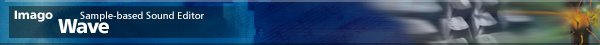
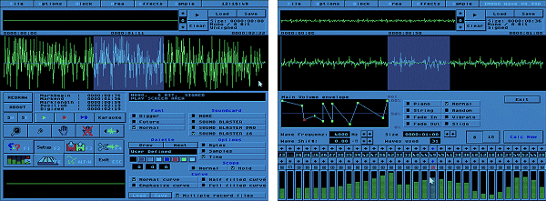

|
|
 IMAGO Wave is a sample-based sound editor supporting Sound Blaster, Sound Blaster Pro and Sound Blaster 16 cards. 
Wave supports multiple effects including echo, reverb, vibrato, tune, slide, chorus and distortion effects, time stretching, robotize/chip algorithms, and envelope controlled resonant filters. Wave can visualize samples with six different scopes, four different fourier spectrums, and a disco light option. |